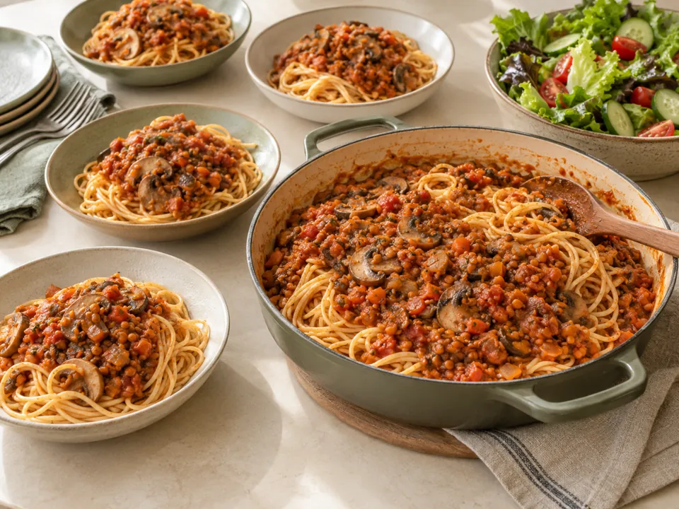
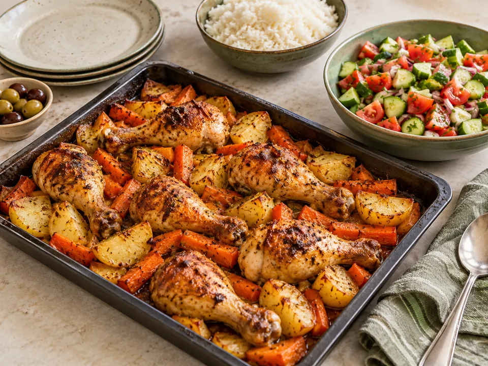

טבעוניבולונז עדשים ופטריות
ספגטי ברוטב עשיר וסלט עם טחינה לימונית
₪8.3–10.4לסועד · אומדן לכמויות במתכון
למתכון המלא ←ארוחת תנור זהובה עם סלט ישראלי קצוץ
5 סועדים: כ־₪11.5 לאדם · 4 סועדים: כ־₪14.4 לאדם
אומדן לעלות הכמויות במתכון, כולל שמן ותבלינים. איך חושב המחיר?
מחממים תנור ל־200 מעלות. חותכים את תפוחי האדמה לקוביות של כ־3 ס״מ ואת הגזר למקלות עבים.
מערבבים שתי כפות שמן עם פפריקה, כמון, שום כתוש, מיץ מחצי לימון, מלח ופלפל. מצפים את העוף והירקות ומסדרים בתבנית רחבה.
מוסיפים חצי כוס מים לתחתית, מכסים ואופים 35 דקות. מסירים את הכיסוי ואופים עוד כ־25–30 דקות, עד שהירקות רכים והעוף מבושל לחלוטין. משחימים לפי הצורך עוד כמה דקות.
קוצצים עגבניות ומלפפונים, ומתבלים בכף השמן שנותרה, מיץ מחצי לימון ומלח. מגישים את העוף והירקות עם הסלט ומעט מנוזלי הצלייה.
תפוחי האדמה מתבשלים באותה תבנית וסופגים טעם מהעוף. קונים שוקיים לפי משקל וירקות שלמים, בלי תערובות מוכנות.
שוקי עוף, תפוחי אדמה, גזר וסלט טרי.
אלרגנים מרכזיים במתכון: בדקו את תוויות המוצרים שבחרתם. יש לבדוק גם את תוויות המוצרים, התחליפים והתבלינים.
בשלו עוף, גם טחון, לטמפרטורה פנימית של 74°C במרכז החלק העבה. זמני הבישול משוערים; מדחום מזון הוא הדרך לבדוק. מקור לטמפרטורות הבישול: USDA ↗
במתכונים עם חומוס ושעועית משתמשים בקטניות שכבר בושלו, לא בקטניות יבשות ללא בישול. זמני ההכנה אינם כוללים הפשרה או בישול מוקדם שלהן.

טבעוניספגטי ברוטב עשיר וסלט עם טחינה לימונית
תבשיל אדום עם תירס, אורז וטחינה בצד
 חלבי
חלבי